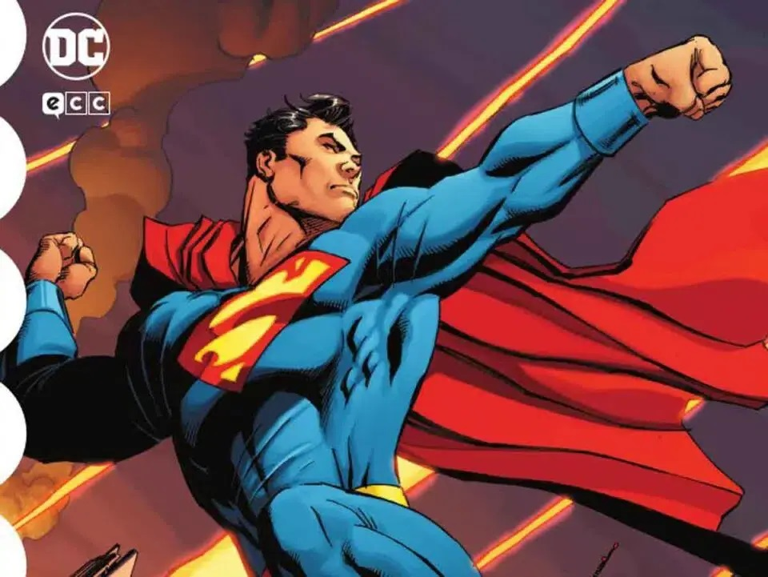

Marvel anuncia Beyond Amazing, un evento de 2022 que celebrará el 60ºAniversario del debut de Spider-man en Amazing Fantasy #15 de 1962.
El pasado mes de junio se anunciaba que Nick Spencer finaliza en septiembre su etapa en Amazing Spider – Man, para estrenarlo en octubre en el número #75. En España es el número #36, disponible en agosto. Todavía quedan más detalles de Spider-Man Beyond.
En el campo de la redacción, se encuentra Kelly Thompson y Saladin Ahmed. Consta de 80 páginas y cuenta con el arte de Patrick Gleason, Mark Beagley y Marcelo Ferreira entre otros. Acerca de Spider-man Creado por Stan Lee y Steve Ditko, el personaje de Peter Parker apareció por primera vez en Amazing Fantasy #15, cuya portada data de agosto de 1962. El número tuvo tanto éxito que Spidey pronto consiguió su propia serie en solitario, The Amazing Spider – Man, cuyo primer número tiene fecha de portada de marzo de 1963.
Todavía sigue siendo uno de los títulos más duraderos de Marvel Comics hasta el día de hoy.
También ha tenido un gran impacto en el mundo del cine, ya que se ha llevado a la gran pantalla. Ha sido interpretado por Nicholas Hammond, Tobey Maguire, Andrew Garfield y Tom Holland. El próximo largometraje homónimo de Spidey, Spider-Man: No Way Home, está previsto que llegue a los cines a finales de año, el 17 de diciembre.
El multipremiado guionista de DC Comics Tom King y el dibujante estrella Andy Kubert nos traen una aventura en la que Superman brilla en todo su esplendor, dejando claro, porque es el primer y más importante de los superhéroes. Una niña ha sido secuestrada y llevada al espacio.
El mundo no puede prescindir de Superman mucho tiempo. Pero cuando Kal El promete algo, lo cumple, y salvará a todos, o caerá en el intento. King y Kubert repasan todos los valores que definen al primer superhéroe de la historia en una obra brillante, inteligente, llena de acción y con una idea principal: Dejar claro lo que hace a Superman ser Superman. Superman no puede salvar a todo el mundo, pero nunca dejará de intentarlo, su fe inquebrantable le impulsa a ello.
Y cuando una niña es secuestrada por unos alienígenas, debe decidir entre salvar esa única vida y dejar el planeta un tiempo sin vigilancia, o dejar que otros se ocupen del tema, y que se resuelva. Pero es Superman, nunca dejará de intentarlo. El viaje cósmico del héroe de la S en el pecho le llevará hasta los rincones de un universo oscuro, malvado, a veces ilógico, pero con esperanza, con su fe, su luz, siempre podrá mejorar. Tom King lleva mucho tiempo siendo una estrella de DC, y cada vez que toca un personaje repasa su psicología, desnuda el alma primigenia que lo anima. En el caso de Superman, deja un trabajo en el que se deja claro una cosa. Superman es luz, es esperanza, es la promesa de que todo puede ir a mejor si te esfuerzas, es Sansón, Apolo, Lugh, un mañana mejor y luminoso.
King no deja de explorar nada del personaje, en cada entrega analiza lo que ha hecho a Superman crecer, y sobre todo, conservar esa ilusión y candidez inicial que Siegel Y Shuster pusieron en él.
volver